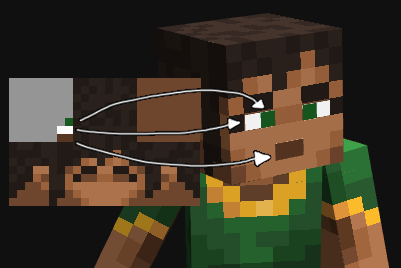

Skin Converter
Drag and drop skin file to convert
Drag and drop skin file to convert
Follow this guide to set your game up for modding.
Download the mod .pak file and place it in your ~mods folder.
If you need any help, feel free to ask in the #dungeons channel in our Discord server. Please mention what version of the game you have (Launcher or Windows Store) in your question, and be patient while waiting for a response.
The mod loads skin and cape textures from a folder in your ~mods folder called "skins". Textures should be named based on what they should replace. For example, to replace the Valorie skin, name your converted skin "Valorie.png" and place it in the ~mods/skins/ folder. To find out what textures you can replace, just keep reading!
Extracting the default skins is the easiest way to see what you can edit using this mod. To do it, simply press Shift + F5 while in-game with the mod installed. This will put all of the default skin and cape textures the mod supports in the ~mods/skins/ folder. This will not overwrite any existing files in the skins folder, so it is safe to use without backing up your skins.
The mod will automatically load the skins and capes you put in your skins folder when the game starts, but you can also reload the skins at any time by pressing F5 in-game. This is very useful if you are still editing your skin.
Minecraft Dungeons uses a slightly different skin format compared to Java Edition. They may seem similar, but there are a lot of small changes to almost all parts of it. To convert a Java skin to work in Dungeons, use the Skin Converter above.
Java Edition has 3 different skin formats: Classic, Slim, and the old legacy format. When you upload a skin, the converter is able to automatically detect legacy skins, but for the other two, you have to select the right one. The only difference between Classic and Slim skins is the width of the arms. Classic skins have 4x4 pixel arms, while Slim has 3x4. If you're not sure which one to select, just try both and see what looks best in the 3D preview of the skin.
The player model in Minecraft Dungeons supports face animations, however the animated parts of the face uses a part of the texture that isn't normally used in Java Edition skins. Here is an image showing where those parts are in the top left corner of the texture:
Note that the part where the face normally goes has no mouth and the eyelids are closed. This is because the blinking animations just shrinks the eyes so they're not visible over the eyelids anymore.
To have two different eye colors or 2px tall eyes requires editing the player model, which is outside the scope of this mod. If your skin needs either of those, you could ignore the animated parts (leave them transparent) and just use the normal non-animated face like in Java Edition.
When converting a skin with animated eyes, remember to tick the "Has animated eyes" checkbox! You can look at the 3D preview of the skin to see if the face animations are working correctly.
In Minecraft Dungeons, skins can have an extra texture that controls how shiny different parts of the skin should be. This extra texture have the suffix _S in the filename. If you're not sure what to do with it, I recommend just replacing the one for your skin with a fully black image.
These textures also control other things than just the shininess, but those are less noticeable on most skins. The red color channel is used for specularity (shininess), green is most likely used for metalness, and blue is used for emissive intensity. You can't change the emissive color using this mod, as that is controlled by the material itself and not a texture.
{kind=link}